[Window] apache-tomcatでロードバランシング(Load balancing)する方法とセッションクラスタリング（セッション共有）
こんにちは。明月です。
この投稿はapache-tomcatでロードバランシング(Load balancing)する方法とセッションクラスタリング（セッション共有）に関する説明です。
以前の投稿で私がapacheとtomcatを連携する方法に関して説明したことがあります。
link - [CentOS] ApacheとTomcatの連携
その時にはapache-tomcatの1:1の連携だったんですが、今回はapacheから数多くのtomcatを連結してトラフィックを分散する方法です。運用中でウェブサイトで接続者が多くなると始めに構成することがapache-tomcatとの分散です。
動的なウェブサイトなら以外にこのweb servletで処理トラフィックが多くなります。なぜならservletでデータベース接続もしなければならないし、様々な設定ファイルを読み込し、複雑な仕様だったらservletで処理することが多くなります。
これを数多くのサーバで運用してapacheでトラフィックを集まってロードバランシング、つまり、トラフィックに合わせてservletを分散してサイトがトラフィックにより遅くなることを少しでも改善することではないかと思います。
apache段階でのトラフィックが多くなるとDNS段階でapache分散するべきですね。私もそこまでの作業をしたことがないので、正確に言うことは難しいです。
apacheでmod_jkを連携するためにはworkers.propertiesを修正しなければならないです。
# workリスト
worker.list=router,jkstatus
# apacheに連携されたmod_jkに関する状態(ロードバランシング表示)
worker.jkstatus.type=status
# type lbはロードバランシングという意味だ。
worker.router.type=lb
# 同一なsessionIDの場合、一つのtomcatにだけ継続的に管理するべきな場合
worker.router.sticky_session=true
# ロードバランシングリスト
worker.router.balance_workers=worker1,worker2
# 1番目のロードバランシングのトムキャット
worker.worker1.type=ajp13
worker.worker1.host=localhost
worker.worker1.port=8109
# 処理割り当て比率、つまり、2番目に1で設定したので1:1比率でロードバランシングになる。
worker.worker1.lbfactor=1
# 2番目のロードバランシングのトムキャット
worker.worker2.type=ajp13
worker.worker2.host=localhost
worker.worker2.port=8209
worker.worker2.lbfactor=1
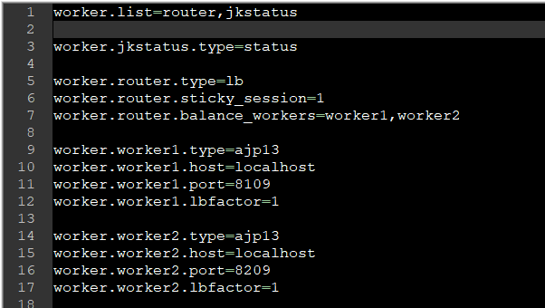
httpd.confにはworker listを設定すれば良いでしょう。
LoadModule jk_module modules/mod_jk.so
<IfModule mod_jk.c>
JkWorkersFile conf/workers.properties
JkLogFile logs/mod_jk.log
JkLogLevel info
JkLogStampFormat "[%y %m %d %H:%M:%S] "
</IfModule>
<VirtualHost *:80>
<!-- ロードバランシングするrouter設定 -->
JkMount /* router
<!-- mod_jk状態ページ -->
JkMount /jkmanager/* jkstatus
ServerName localhost
</VirtualHost>
<!-- 状態ページには127.0.0.1で接続する場合だけ許す。 -->
<Location /jkmanager/>
JkMount statusmanager
Require ip 127.0.0.1
</Location>
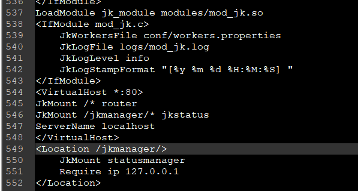
上の例をみればjkmanagerを別途に設定しました。jkmanagerはapache - tomcatを連結する時にロードバランシングの状態を確認できるページです。apache-tomcatで数多くのサーバを管理する時、しっかり連携されているかを確認するページです。
もし、一つのtomcatが問題になると状態ページでその結果を知らせてくれます。
ここまで設定すっればロードバランシング設定は完了です。でも実際にウェブサーバを運用すればロードバランシングだけ設定する場合にセッション共有がしなかったので、変な現象が発生します。。代表的に急にログアウトされる場合があります。
なぜならtomcat1でログインしました。tomcat1にはログイン情報をsessionに入れ、session確認でログイン可否をチェックします。
でも、tomcat2にはログインセッションがないので、tomcat1からtomcat2に変更されたらセッションが違いのでログアウトされる現象になります。
それでtomcat1とtomcat2のセッションを共有しなければならないですが、それをセッションクラスタリングと言います。
tomcatの以前のバージョンにはセッションクラスタリング設定がかなり複雑だったんです。でも、私はtomcat 9で確認しましたが、Clusterがコメントされていることを解除することだけでセッションクラスタリングが開始します。
...
<Cluster className="org.apache.catalina.ha.tcp.SimpleTcpCluster"/>
...
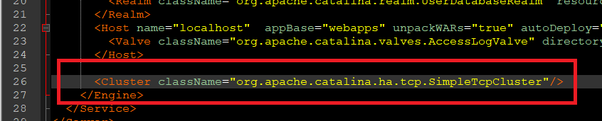
そして各、web.xmlにタグ要素を一つ追加しましょう。
...
<distributable/>
...
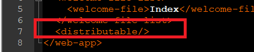
私はテストのため、tomcat1のindexファイルにはserver1と表示するし、tomcat2のindexファイルにはserver2と表示しました。
import java.io.IOException;
import javax.servlet.ServletException;
import javax.servlet.annotation.WebServlet;
import javax.servlet.http.HttpServlet;
import javax.servlet.http.HttpServletRequest;
import javax.servlet.http.HttpServletResponse;
import javax.servlet.http.HttpSession;
@WebServlet("/Index")
public class Index extends HttpServlet {
private static final long serialVersionUID = 1L;
public Index() {
// TODO Auto-generated constructor stub
}
protected void doGet(HttpServletRequest request, HttpServletResponse response) throws ServletException, IOException {
HttpSession s = request.getSession();
// query stringでsessionという値を受け取る。
String session = request.getParameter("session");
// sessionがnullならそのままに追加
if (session != null && session.length() > 0) {
// sessionパラメータがclearならセッションをクリア
if ("clear".equals(session)) {
s.setAttribute("session", null);
} else {
// sessionパラメータをセッションに格納
s.setAttribute("session", session);
}
}
response.getWriter().append("Server1\r\n");
Object obj = s.getAttribute("session");
// sessionというキーがセッションが存在すれば画面に表示する。
if (obj != null) {
response.getWriter().append(obj.toString());
}
}
// POSTタイプはGETタイプと同じ処理
protected void doPost(HttpServletRequest request, HttpServletResponse response) throws ServletException, IOException {
doGet(request, response);
}
}
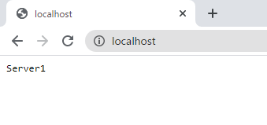
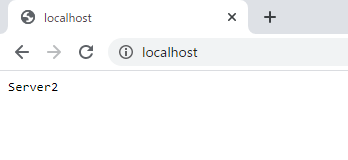
私が様々なブラウザで接続するとserver1という場合もあるし、server2という場合もあります。apacheでトラフィックによりtomcatを分散して呼び出します。
参考に私がtomcat1は8180でweb portを起動してtomcat2は8280ポートでweb portを起動しました。
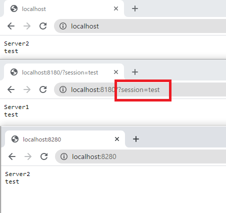
server1でsessionをtestの値で格納しましたが、server2でもsession値があることを確認できます。
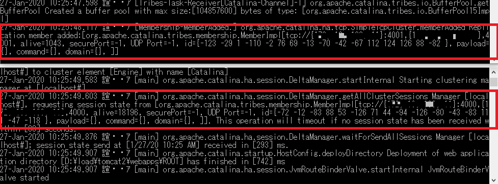
ログでもセッションクラスタリングが動いていることを確認できます。
そして先に設定したmod_jk状態ページを確認しましょう。
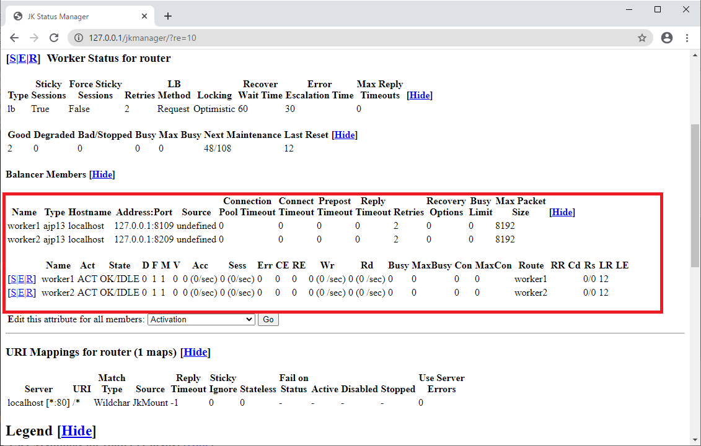
こんなにajp13でtomcatが二つが付いていることを確認できます。
ここで私がtomcat2サーバを停止しました。また、mod_jkをみればworker2がIDLEになったことを確認できます。IDLEならサーバが落ちたっていう意味ではないですが、応答なしという意味ですね。
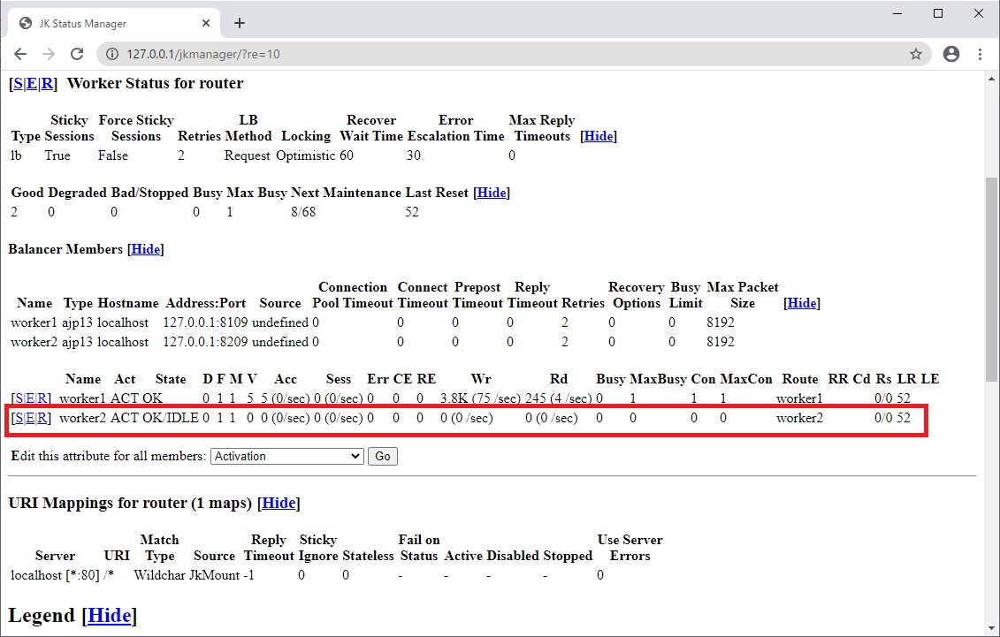
また、tomcat2を起動すればしっかり作動します。
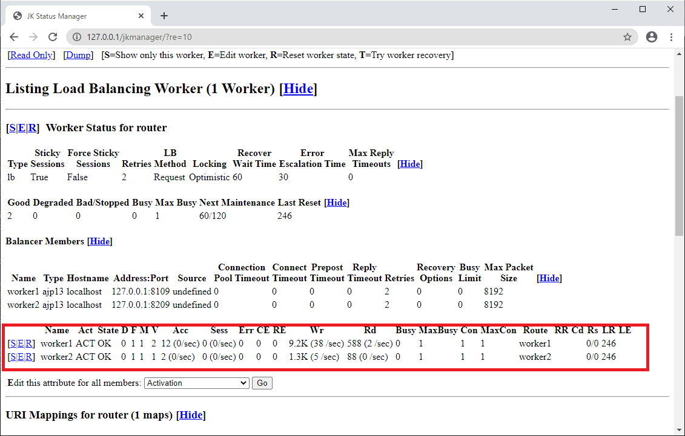
この意味はどの側でサーバが問題になって接続できない状況になっても、残りサーバがしっかり作動するとサイトはいつでも正常作動するので、サービス運用上でも安定性を保証できます。
apache2 2台 - tomcat 2台で運用するとサーバダウンの問題はほぼないでしょう。
Reference - https://tomcat.apache.org/connectors-doc/common_howto/loadbalancers.html
Reference - https://tomcat.apache.org/connectors-doc/common_howto/workers.html
ここまでapache-tomcatでロードバランシング(Load balancing)する方法とセッションクラスタリング（セッション共有）に関する説明でした。
ご不明なところや間違いところがあればコメントしてください。
- [Window] apache-tomcatでロードバランシング(Load balancing)する方法とセッションクラスタリング（セッション共有）2021/11/05 16:58:45
- [Window] Apacheでmod_jkとmod_proxyの差異、apacheでtomcatのwebsocketのプロキシフォーワードする方法2021/11/05 16:55:05
- [Window] MariaDBをインストールする方法2021/10/08 18:56:05
- [Window] WindowでFTPサーバを構築する方法2020/03/19 03:27:22
- [Window] Apacheをインストール方法、サービスに登録する方法。2019/10/18 07:36:51
- [Window] WindowでExplorerのContext menuを修正する方法。2019/07/01 01:42:41
- [Java] 61. Spring bootでRedisデータベースを利用してセッションクラスタリング設定する方法2022/03/01 18:20:52
- [Java] 60. Spring bootでApacheの連結とロードバランシングを設定する方法2022/02/28 18:45:48
- [Java] 59. Spring bootのJPAでEntityManagerを使い方2022/02/25 18:27:48
- [Java] 58. EclipseでSpring bootのJPAを設定する方法2022/02/23 18:11:10
- [Java] 57. EclipseでSpring bootを設定する方法2022/02/22 19:04:49
- [Python] Redisデータベースに接続して使い方2022/02/21 18:23:49
- [Java] Redisデータベースを接続して使い方(Jedisライブラリ)2022/02/16 18:13:17
- [C#] Redisのデータベースを接続して使い方2022/02/15 18:46:09
- [CentOS] Redisデータベースをインストールする方法とコマンドを使い方2022/02/14 18:33:07
- [Design pattern] 3-6. ステートパターン(State pattern)2021/11/17 20:04:47
- [Design pattern] 3-5. メメントパターン(Memento pattern)2021/11/16 20:01:36
- [Design pattern] 3-4. イテレータパターン(Iterator pattern)2021/11/15 19:31:28
- [CentOS] Linux環境(CentOS)でCassandra(NoSQL DB)をインストールする方法(DBeaverブラウザでNoSQL使い方)2021/11/12 17:33:58
- [Design pattern] 3-3. コマンドパターン(Command pattern)2021/11/05 17:01:42
- [Window] apache-tomcatでロードバランシング(Load balancing)する方法とセッションクラスタリング（セッション共有）2021/11/05 16:58:45